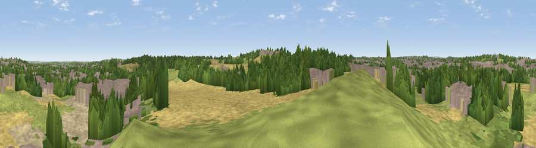

Viewpoint near Sutton-in-Ashfield
#33044 in England · top 56% of its area beats it · near Sutton-in-AshfieldWhere it is
The exact computed spot (SK 52075 58975). Click the marker for map links.
The view, rendered

A 360° render of this exact spot computed from the terrain model, tree cover and land cover — summer colours, afternoon light, calibrated against photographs of famous viewpoints. Real trees, hedges and buildings will differ in detail.
The panorama
Grey silhouette: terrain skyline in each direction (720 bearings, Earth curvature and refraction included). Dashed green: skyline with trees (+15 m) and buildings (+8 m) as obstacles. Blue strip: how far the ground is visible on each bearing.
Where the view opens
Wedge length = distance to the farthest visible ground on that bearing (vegetation-aware). Rings at 10, 25 and 50 km.
What fills the view
27% woodland · 22% cropland · 21% built-up · 21% grassland · 6% bare ground · 1% water
Angular shares of the visible panorama (visual magnitude), not map area. Landscape diversity 0.69 (0–1 Shannon).
Key numbers
More beautiful places nearby
The staircase of upgrades: each row has a higher view potential than everything closer. Driving times are estimates from straight-line distance, calibrated against real road routing — check an actual route before setting out.
| Place | Direction | Drive | Score |
|---|---|---|---|
| Viewpoint near Mansfield | ENE · 3 km | ~6 min | 40.6 |
| Viewpoint near Kirkby-in-Ashfield | SW · 3 km | ~7 min | 43.6 |
| Viewpoint near Stanton Hill | WNW · 4 km | ~9 min | 44.9 |
| Viewpoint near Annesley | S · 4 km | ~10 min | 46.4 |
| Silverhill | WNW · 6 km | ~13 min | 50.4 |
| Viewpoint near Clipstone | ENE · 6 km | ~13 min | 50.7 |
| Viewpoint near Huthwaite | W · 6 km | ~13 min | 51.8 |
| Viewpoint near Tibshelf | WNW · 7 km | ~14 min | 53.2 |
53.12541, -1.22325 · source: screening · position refined by local search. Computed location — check access rights before visiting.